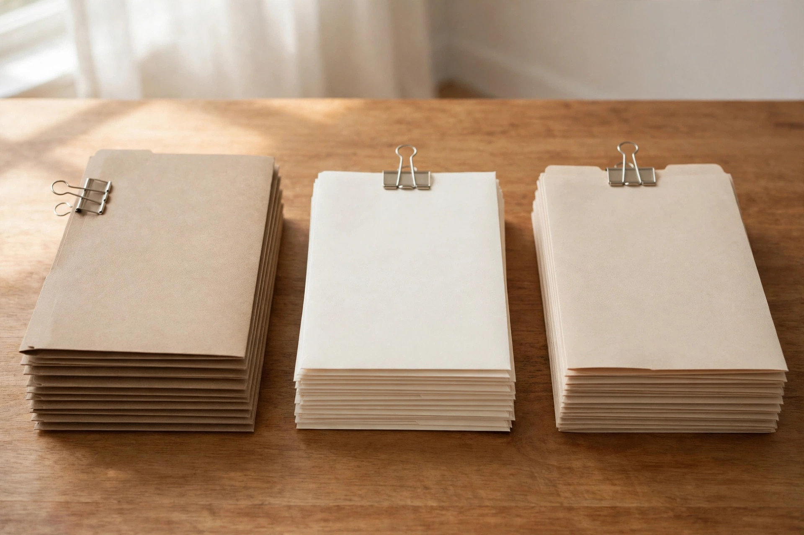

The opportunity, stated plainly
Nobody withholds tax from self-employment income as it arrives, which is why the CRA instalment system exists for people whose income does not have enough tax withheld, the self-employed included. An RRSP contribution is one of the few levers that same person controls directly: a contribution within your deduction limit becomes a deduction you claim against your income for a chosen year. The CRA page on deduction limits confirms the moving parts. Contributions made in the first 60 days of a year qualify for the prior year return; for the 2025 return, that window ran from March 4, 2025 to March 2, 2026. Counted the same way for 2026, January contributes 31 days and February 28 more, so the 60th day of 2027 falls on March 1, 2027. Confirm the date on the CRA site before relying on the final day, and treat the counted date as a backstop, not a plan.
So the December question is not "contribute or lose it." Room carries forward inside the CRA calculation, which starts from your unused room at the end of the preceding year. The real questions are how much, paid from which cash, and deducted in which year.
The honest math: what a year of self-employment creates in room
New RRSP room is the lesser of 18 percent of the previous year earned income and the annual dollar limit, which the CRA lists at $33,810 for 2026. The scenarios below are labelled examples, not predictions. Each one assumes the stated earned income, no pension adjustment, and no unused room carried in, so the arithmetic stays visible.
| Labelled scenario | 2025 earned income (assumption) | 18 percent of that income | New 2026 room after the cap |
|---|---|---|---|
| Lean year | $40,000 | $7,200 | $7,200 |
| Steady year | $90,000 | $16,200 | $16,200 |
| Strong year | $150,000 | $27,000 | $27,000 |
| Ceiling test | $210,000 | $37,800 | $33,810 (cap applies) |
Two qualifications matter more than the table. First, your actual deduction limit is the scenario figure plus unused room from earlier years, minus a pension adjustment where one applies, and the CRA calculates the official number. A decade of lean years can mean far more usable room than one strong year suggests. Second, a contribution is cash out the door in December, a month that also carries the last instalment of the year. The deduction is only worth having if the cash side closes.
Three timings, compared
| Timing choice | Deductible on the 2026 return? | Cash leaves your account | What you know when you decide |
|---|---|---|---|
| Contribute in December 2026 | Yes | December 2026 | Income is nearly final, with weeks left to adjust |
| Contribute in the first 60 days of 2027 | Yes, within the 60 day window | January to early March 2027 | Income is final and the books are closed |
| Contribute now, deduct in a later year | By choice, no; the CRA allows a deduction for unused contributions from a previous year | When you contribute | Useful when a later year is the one the deduction should shelter |
None of the three is the correct answer in general. The first suits a reader who wants the decision finished before the holidays. The second suits a reader whose December cash is spoken for. The third suits a reader whose 2026 income dipped and who expects the deduction to do more work later. That is a decision framework, not a recommendation: your income pattern picks the row.
The December 15 instalment is part of this decision
Instalments for 2026 are required when net tax owing is more than $3,000 for 2026, or more than $1,800 for Quebec residents, and was also over that threshold in either 2025 or 2024. The CRA sends reminders, a February reminder covering March and June, and an August reminder covering September and December. A reminder is not the final word: if your 2026 net tax owing ends up at $3,000 or less, $1,800 or less in Quebec, the CRA states that you do not have to pay instalments for 2026 even though a reminder arrived.
December 15 is where the RRSP decision and the instalment decision meet. Under the CRA current year option, you estimate your 2026 net tax owing, add any CPP contributions payable and voluntary EI premiums payable, and pay 25 percent of that total on December 15, after 75 percent was due across the earlier dates. An RRSP deduction you plan to claim for 2026 reduces the tax that estimate is built on, so size the contribution before you finalize the instalment, not after. Do the two calculations in the wrong order and you can overpay the instalment in December, then wait for a refund to learn it.

The December runbook
- Confirm your real room. Work from the CRA deduction limit calculation: unused room carried forward, plus the lesser of 18 percent of 2025 earned income and $33,810, minus any pension adjustment. If you cannot state your limit as a number, stop here.
- Estimate 2026 income while the year is still open. Total invoices issued, expenses recorded, and work already delivered. December is the last month this estimate can still change the outcome.
- Pick a scenario amount, not a round guess. Use the scenario table as the shape: a contribution sized to your room and your December cash, labelled against the year you actually had.
- Choose the timing row. December, the first 60 days, or contribute and carry the deduction forward. Write the choice down with the reason, one line is enough.
- Recalculate the December 15 instalment under the current year option. Estimate net tax owing with the planned deduction included, add CPP contributions payable and any voluntary EI premiums, and pay the December share of that total.
- Make the contribution and keep the receipt with your 2026 records. The contribution, the deduction year you chose, and the instalment calculation belong in the same folder your accountant will open in the spring.
Risks, and who should not contribute this December
- Overcontributing. The CRA generally applies a tax of 1 percent per month on contributions that exceed your deduction limit by more than $2,000. The buffer is $2,000, not a target.
- Borrowing to contribute. The interest paid on money borrowed to contribute to an RRSP cannot be claimed as a deduction. A loan funded contribution starts its life carrying a cost the deduction does not offset.
- Starving the instalment. A taxpayer who is required to pay instalments and does not pay may face instalment interest and penalty charges. Funding an RRSP by shorting the December 15 payment trades one CRA problem for another.
- The age limit. Contributions to your own RRSP end on December 31 of the year you turn 71. If that is this year, the timing table above collapses to December, and this becomes a different conversation with your accountant.
The stop line
Here is the kill criterion, stated before any money moves. If, on December 15, paying the instalment your current year estimate produces would leave the contribution cash short, stop: pay the instalment, skip the December contribution, and use the first 60 days instead. The room survives the wait, because unused room is the first line of next year's calculation. A contribution made in a panic, in the wrong size, or ahead of a tax payment is not discipline. It is just a December mistake with a receipt.
What success looks like
By December 31 you can point to four things: a deduction limit stated as a number from the CRA calculation, a contribution that fits inside it, a December 15 instalment recalculated with that contribution in the estimate, and a written note of which tax year the deduction will be claimed in. If all four exist, the first 60 days become a choice rather than a scramble.
— Sterling Cole, Money Writer — Earning Desk